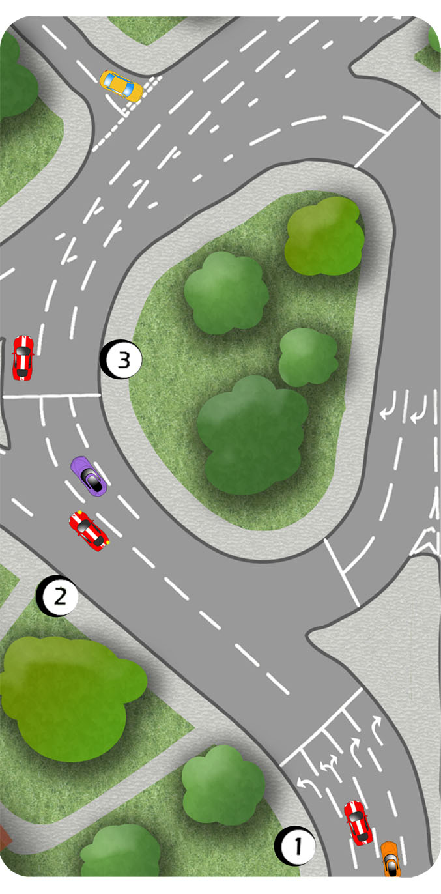

Where there are more than two lanes approaching junctions and roundabouts, the use of a signal isn’t always appropriate.
If in doubt, ask yourself whether a signal would be misleading or helpful.

1.For example, it would be misleading to signal right at a junction where there is another lane to the right of you. It could be interpreted that you’re changing lanes.
2.However, a short signal where your lane divides can be very helpful. In this case, the purple car and the yellow car could benefit by knowing that the learner car is going right.
3.A left signal here, to exit the roundabout could be interpreted as a signal to turn left into the side road. There is then a danger that the yellow car would emerge in front of you.